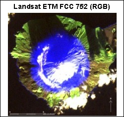
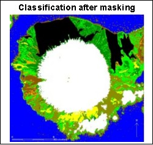

 The study area for this project was the recently active stratovolcano Mt. Cleveland (last erupted in Feb-March 2001) in the the Central Aleutian Island chain of Alaska. The study used three Landsat 7 ETM+ images from June 28, 2000, June 8, 2001, and November 22, 2001. The objectives for the study were to generate a land cover map, calculate the surface area of the 2001 volcanic deposits, and to study the thermal state of the volcano in November 2001. Image processing involved use of optimum index factor (to determine the best 3 band combination), band ratios, high pass filtering, principle components analysis, and de-correlation stretching.
 A supervised maximum likelihood classification was run on the three subscenes after masking out regions of water and shadow. The June 2000 image was classified with 5 classes with an accuracy of 94. 4%, while the November 2001 image was classified with 9 classes with an accuracy of 95.8%. The June 2001 image's accuracy was below 70% and statistically was not used in any further analysis, but it was still useful for identifying some tephra fall deposits that had not been eroded away on the eastern part of the volcano. The area of the 2001 flows were then calculated to have a total estimated surface areas of 0.73 km2 for the lavas, 0.13 km2 for the new delta, and 0.20 km2 for the 2001 lahar. It was determined that the thermal state of the volcano was still producing heat from the lava flows and summit fumaroles. The delta, parts of the lava flow, and fumaroles were at a kinetic temperature of 53.9°C, and that another part of the lava flow was at 40.2°C. These temperatures are higher than some previous field work, thus need to be further scrutinized for the amount of error in the values.